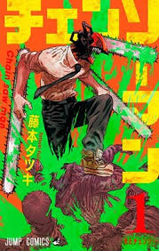
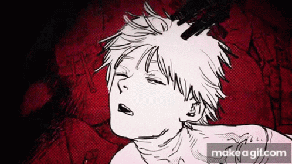
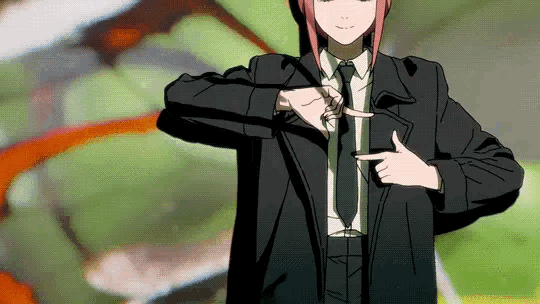

Chainsaw Man es un anime de acción oscura que sigue la historia de Denji, un joven con deudas que sobrevive cazando demonios junto a su perro demonio Pochita.

Después de una traición, Denji se fusiona con Pochita y se convierte en Chainsaw Man, obteniendo la habilidad de transformar partes de su cuerpo en motosierras para luchar contra demonios.

La historia explora temas como la pobreza, los sueños simples, la soledad y el deseo de una vida mejor.
Fue animado por el estudio MAPPA y destacó por su estilo cinematográfico y su animación detallada.
